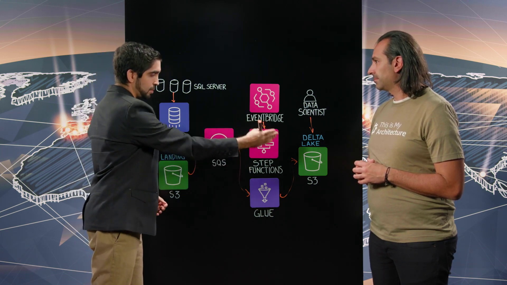
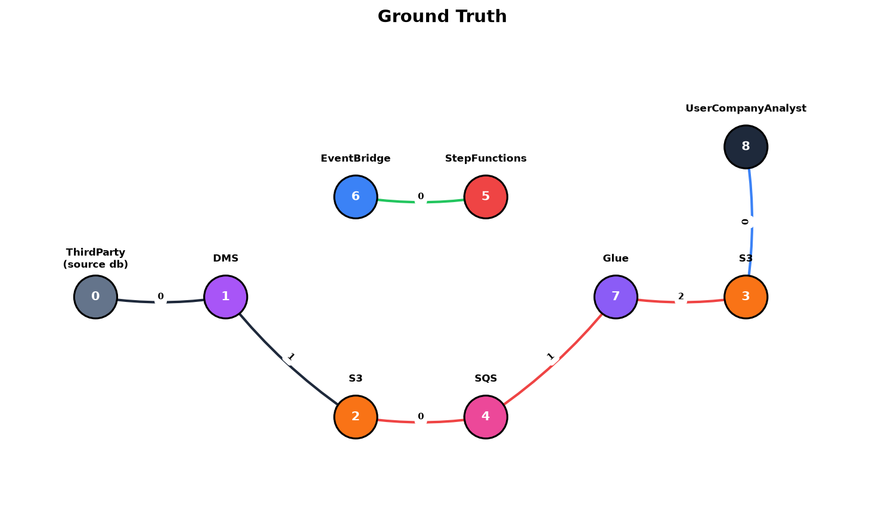
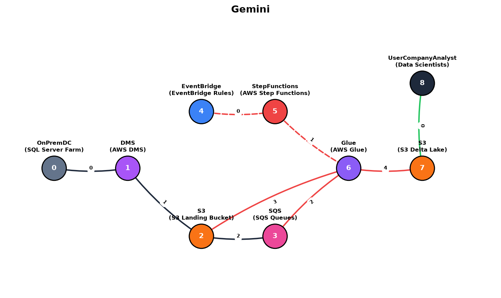
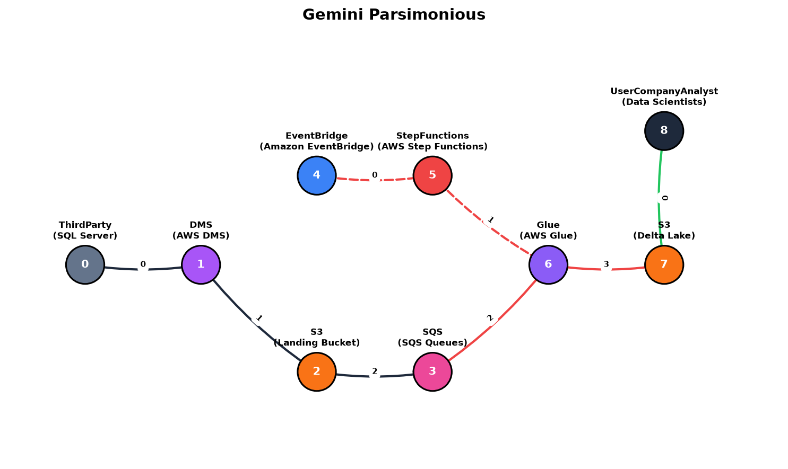

Reporte de comparación de grafos extraídos contra el Ground Truth de Cloudscape

Descripción: Esta es la imagen limpia seleccionada automáticamente por el algoritmo de oclusión como la mejor representación del pizarrón final.



OnPremDC en lugar de ThirdParty. Además, alucinó algunas conexiones redundantes de retorno en las aristas.ThirdParty, alineándose de forma exacta con la publicación. La estructura de aristas es sumamente limpia y reduce las aristas alucinadas, logrando casi una equivalencia exacta con el Ground Truth.